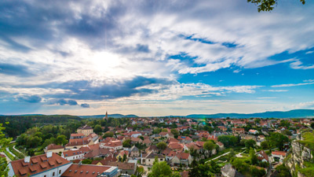
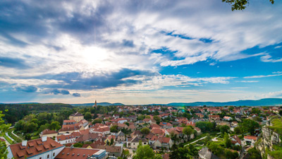

Preston
Year Founded:
Population:
Annual Rain Fall: inches

Year Founded:
Population:
Annual Rain Fall: inches
Year Founded:
Population:
Annual Rain Fall: inches

Year Founded:
Population:
Annual Rain Fall: inches
Spring has come, warm weather is on the way, but the mountains seem to be frozen in winter.
The temperatures are ranging from 25-39 degrees, perfect weather for sledding or just
good old snow ball fights. Its easy to enjoy the beautiful weather. Just head on up the
nearest mountain.
For example the Sawtooths, the Walkingtons, and the Pendletons are all great spots to visit.
They even have small picnic benches to rest and have some lunch. Kick off your spring with some
fresh mountain air.
Phone Number: 1 800-222-3333
Email: weatherinthewild@weather.org
Address: PO Box 22333
Preston, Idaho 83263